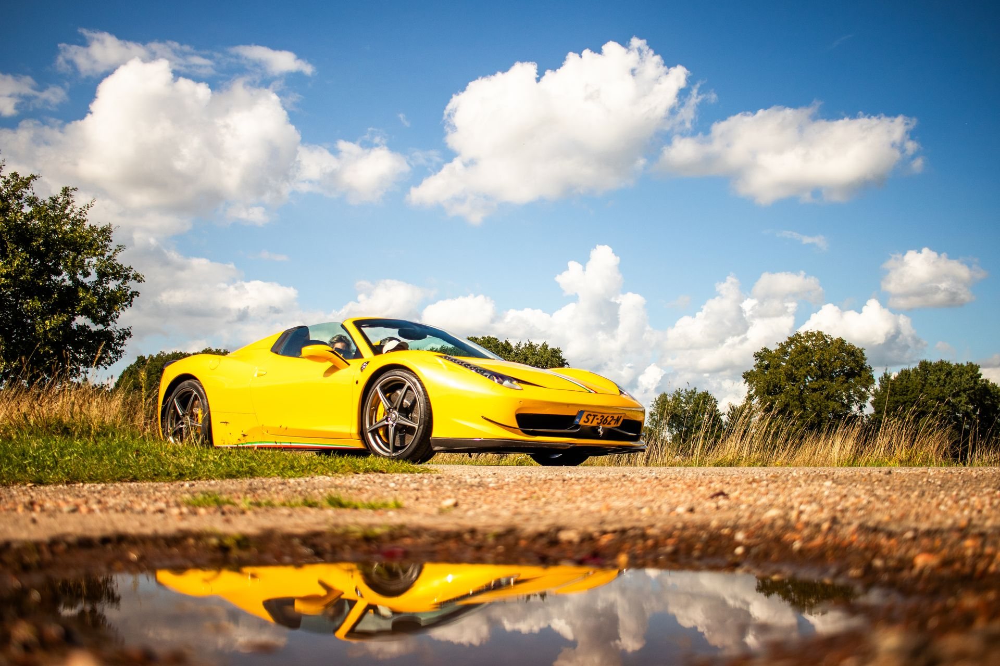
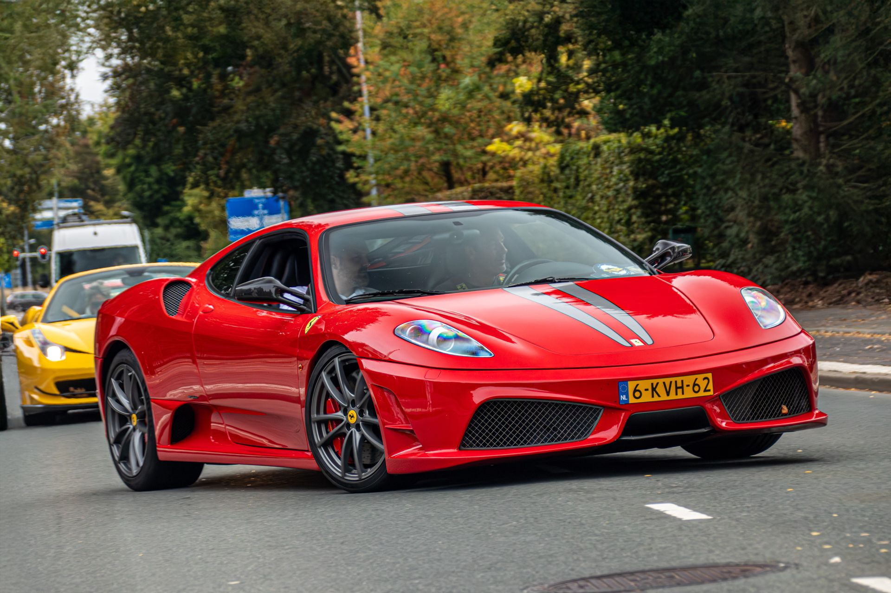
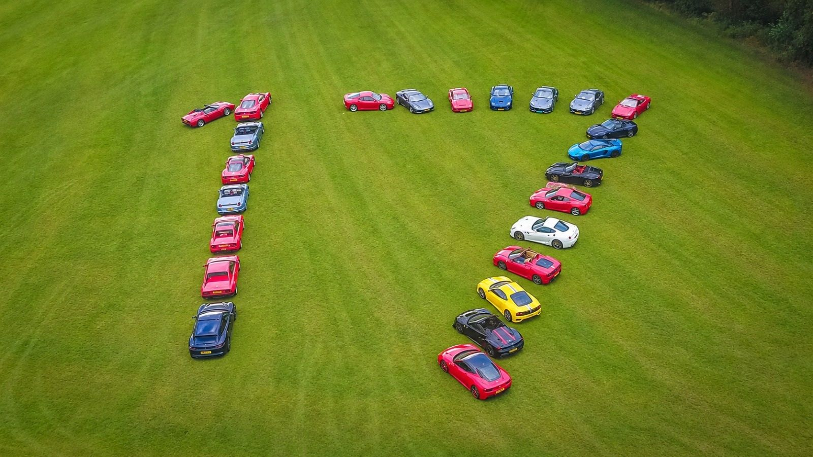

Wat doen we?
De stichting FerrariOwnersClubNL bestaan in 2027 alweer 17 jaar !
We zijn een onafhankelijk netwerk van en voor actieve Ferrari rijders.
Ons doel is een mooi rijdersprogramma te bieden en om elkaar te informeren over het plezier van "Ferrari rijden".
Je vindt hier géén forum ! Als je toch een prima Ferrari forum zoekt kijk dan op www.ferrarichat.com.

Laagdrempelig en toegankelijk
De FerrariOwnersClubNL onderscheidt zich door zijn laagdrempeligheid en toegankelijkheid.
Ook zijn we absoluut niet gediend van elitair gedrag.
Er is geen ballotage, geen kledingvoorschrift, geen maaltijd in een restaurant met 3 of meer sterren.
Ons doel beschreven we hierboven al: Het Ferrari gevoel beleven en vooral: RIJDEN!
Ook bezoeken we als club een aantal evenementen van andere organisaties.

Donateur… of niet …
We verwelkomen je graag als donateur; daarmee geef je ons niet alleen je morele support maar ook de financiële dekking die nodig is voor een komend seizoen.
Wie zijn onze donateurs ?
- iedereen die een Ferrari bezit
- eigenaars van andere interessante Sportscars, i.o.m het bestuur
- indien iemand donateur is en niet meer in het bezit is van bovenstaande auto's is het mogelijk om donateur te blijven en de ritten mee te rijden in een andere auto. Vriendschap is voor ons belangrijk.
De donatie is voor het kalenderjaar 2027 niet veranderd en gesteld op:
Je wordt donateur door de donatie in het 1e kwartaal van het kalenderjaar over te maken via NL69ABNA 0527400831
Een partner/bijrijder kan na ook donateur worden, in dat geval vervalt de bijdrage per evenement: je spaart centjes.
Voor een groot evenement of bijv. de Ferrari Herfstrit kan van zowel donateur/rijder als ook bijrijder een (extra) bijdrage worden gevraagd indien er extra kosten zijn zoals eten bij een restaurant of bij catering (zoals bijv. de Ferrari BBQ)
Overmaken via de ABN met NL69 ABNA0527400831 of Tikkie ABN
Wat bieden wij de donateur?
- Gratis deelname aan de meeste evenementen (tenzij de organisatie erg duur is, dat wordt dan aangegeven).
- Gratis deelname aan de jaarlijkse Ferrari BBQ, wel betaalt de niet-donateur hiervoor € 50,00
- Zeer snelle en frequente informatie over alles wat interessant kan zijn d.m.v. digitale Nieuwsbrieven.
- Er is een Vertrouwens Aanspreek Persoon bij eventueel geconstateerd ongewenst gedrag.
- Via onze huis verzekeraar krijgt u als donateur korting op uw autoverzekering na vermelding lidnummer.
- Advies bij aan- en verkoop, technische adviezen.
- Schitterende foto’s en video’s van de evenementen (op verzoek in groot formaat) via de fotoserver.
- Nieuw: er is een WhatsApp groep waarvan je deel kunt uitmaken, geef je hiervoor op.
- In het kader van privacy maken we geen donateurslijsten openbaar.
- Ideal online betalingsmogelijkheid
- Korting bij Firma PARTSPOINT (voorheen Brezan)
Geen donateur worden? Wel jammer! Maar dat is natuurlijk geen probleem.
Als je toch meerijdt als gast betaal je als rijder met bijrijder € 185,00 per evenement.
Voor de grote evenementen kan een ander bedrag worden verlangd.